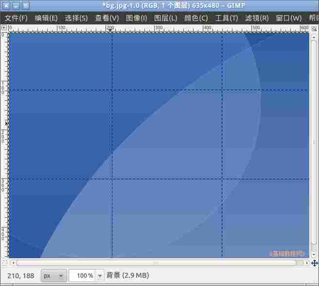
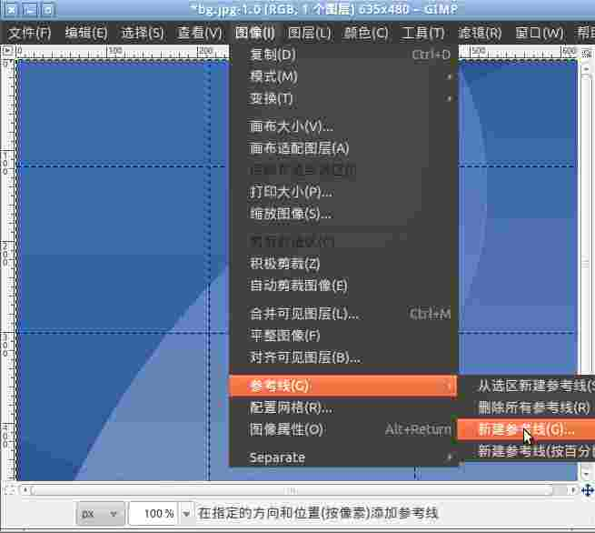
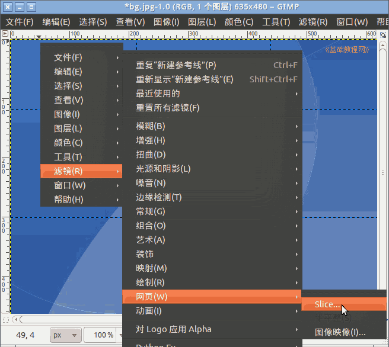
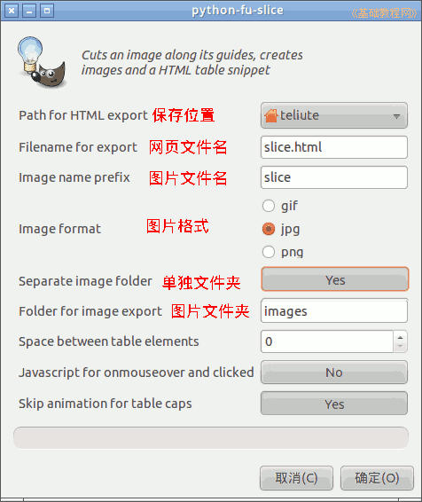
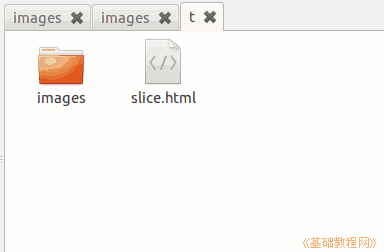
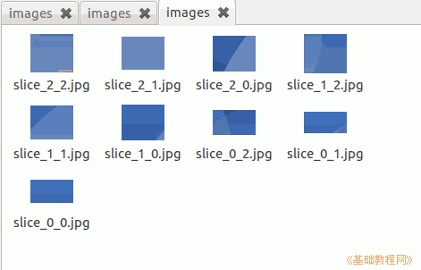

GIMP操作基础教程
作者：Teliute 来源：基础教程网
1、切片
1）启动 gimp，打开一幅大的图片，一般是用在网页中的，如下图；
2）使用移动工具，从左侧和上边的标尺中，各拖出两条参考线，这样图片被切成九块；

3）如果想要精确切割，点菜单“图像－参考线－新建参考线”；

4）画好参考线后，点菜单“滤镜－网页－Slice切片”；

5）出来一个切片面板，分别是网页存放的位置、文件名、图片的文件名、格式和存放位置；

6）点确定后，在选定的文件夹中，有一个slice.html文件，还有相应的images文件夹和里面的slice*.jpg；

7）双击打开slice.html，里面的图片实际上已经是切开了的小图片拼出来的，查看网页源文件可以看到；

本节学习了GIMP中切片的基本用法，如果你成功地完成了练习，请继续学习；
本教程由86团学校TeliuTe制作|著作权所有
基础教程网：http://teliute.org/
美丽的校园……
转载和引用本站内容，请保留作者和本站链接。
|
|